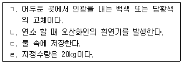

위험물기능사 (2004-04-04 기출문제)
1과목: 화재 예방과 소화방법
1. CaC2 는 물이나 습기에 닿으면 C2H2 가스를 발생하며 반응이 급격할 때는 착화 폭발한다. 이의 화재 시 소화기로서 적당하지 않은 것은?
- 포말
- 탄산가스
- 사염화탄소
- 마른모래
(정답률: 33%)

2. 다음 물질 중 소화제로 쓸 수 없는 것은?
- HCN
- CCl4
- KHCO3
- NaHCO3
(정답률: 61%)
3. 이산화탄소 소화기 사용 중 소화기 출구에 생길 수 있는 물질은?
- 포스겐
- 일산화탄소
- 드라이아이스
- 수성가스
(정답률: 68%)
4. 연소물과 작용하여 유독한 COCl2 가스를 발생시키는 소화약제는?
- CH2ClBr
- CCl4
- CBrClF2
- CO2
(정답률: 60%)
5. 물을 소화제(消火濟)로 사용하는 이유는 물의 어떠한 성질 때문인가?
- 물의 화학적성질
- 물의 굴절율
- 물의 기화잠열
- 물의 비점(比点)
(정답률: 69%)
6. 산화성액체 위험물의 소화설비 적응성으로 옳지 않은 것은?
- 마른모래
- 인산염류 소화기
- 할로겐화합물 소화기
- 이산화탄소 소화기
(정답률: 36%)
7. 화재예방과 화재 시, 비상조치계획 등 예방규정을 정하여야 할 옥외저장시설에는 지정수량 몇 배 이상을 저장 취급하는가?
- 30배 이상
- 100배 이상
- 200배 이상
- 250배 이상
(정답률: 70%)
8. 유류, 전기화재에 가장 부적당한 소화기는?
- 산.알칼리소화기
- 이산화탄소소화기
- 사염화탄소소화기
- 분말소화기
(정답률: 44%)
9. 분말 소화설비에 사용하는 소화약제 중 전역방출방식에 있어서 방호구역의 체적 1m3 에 대한 제4종 분말 소화약제의 양은?
- 0.15㎏
- 0.20㎏
- 0.24㎏
- 0.30㎏
(정답률: 27%)
10. 지하층에서 사용할 수 없는 소화설비 및 소화기는?
- 불연성 가스 소화설비
- 증발성 액체 소화설비
- 강화액을 방사하는 소화설비
- 포말 소화설비
(정답률: 46%)
11. 소화기는 항상 눈에 잘 띄게 하기 위하여 공통 색으로 표시하게 되는데, B 급 화재에 사용되는 소화기의 표시 색깔은?
- 황색
- 백색
- 청색
- 초록
(정답률: 80%)
12. 화재발생을 통보하는 경보설비가 아닌 것은?
- 자동식사이렌설비
- 비상방송설비
- 연소방지설비
- 가스누출경보기
(정답률: 68%)
13. 다음 중 피난기구가 아닌 것은?
- 비상탈출구
- 간이완강기
- 미끄럼대
- 공기안전매트
(정답률: 50%)
14. 액체 연료에 불이 났을 때 물을 뿌려 소화하는 것이 부적당한데, 가장 큰 이유는?
- 연소가 활발해 진다.
- 인화성이 더 커진다.
- 연소면이 확대된다.
- 물이 분해되어 수소가스가 생긴다.
(정답률: 54%)
15. 간이소화용구로 마른 모래를 삽과 함께 준비하는 경우 능력단위 3단위에 해당하는 양은?
- 150리터 이상
- 240리터 이상
- 300리터 이상
- 480리터 이상
(정답률: 42%)
16. 다음 중 할론 1211 소화기에 해당되는 것은?
- C2F4Br2
- CF3Br
- CH2ClBr
- CF2ClBr
(정답률: 90%)
17. 할로겐화합물 소화약제의 효과로 가장 옳은 것은?
- 냉각, 부촉매효과
- 기화잠열효과
- 질식, 기화잠열효과
- 제거, 질식효과
(정답률: 80%)
18. 간이 소화용구에 해당하지 않는 것은?
- 마른 모래
- 팽창 진주암
- 강화 소화액
- 팽창 질석
(정답률: 69%)
19. 통로 유도등의 설치기준에 대한 설명으로 옳은 것은?
- 녹색 바탕에 백색문자로 표기한다.
- 바닥으로부터 1.5m 이하의 높이에 설치한다.
- 보행거리 20m 이하 마다 설치한다.
- 조도 0.2룩스 이상으로 한다.
(정답률: 26%)
20. 화학포소화약제에 사용되는 약제가 아닌 것은?
- 황산알루미늄
- 과산화수소수
- 중탄산나트륨
- 사포닌
(정답률: 56%)
2과목: 위험물의 화학적 성질 및 취급
21. 다음은 염소산나트륨(NaClO3)에 대한 성상을 기술한 것이다. 틀린 것은?
- 조해성, 흡수성이 강하다.
- 무색, 무취의 결정 또는 분말이다.
- 산과 반응하여 유독성의 ClO2 가스가 발생한다.
- 물에 용해되나 알코올, 에테르에는 용해되지 않는다.
(정답률: 55%)
22. 과산화나트륨(Na2O2)의 특성에 관한 설명 중 틀린 것은?
- 자신은 불연성물질이다.
- 가연성 물질과 접촉하면 착화되기 쉽다.
- 공기중 CO2와 반응하여 탄산염이 생성된다.
- 습기 있는 목탄과 접촉하여도 발화하지 않는다.
(정답률: 56%)
23. 다음은 질산칼륨에 대한 설명이다. 틀린 것은?
- 물에 거의 녹지 않는다.
- 흑색화약 원료로 쓰인다.
- 열분해하여 산소를 방출한다.
- 무색 또는 백색의 분말 또는 결정이다.
(정답률: 50%)
24. 다음 물질 중 류별이 다른 것은?
- 질산은
- 질산에틸
- 삼산화크롬
- 질산암모늄
(정답률: 57%)
25. 마그네슘(Mg)분의 성질에 대한 설명 중 옳은 것은?
- 강산과 반응하면 수소가스가 발생한다.
- 분말의 비중은 물보다 적으므로 물위에 뜬다.
- 알칼리수용액과 반응하여 수소가스가 발생한다.
- 상온에서 수분과 반응하여 산화마그네슘이 생성된다.
(정답률: 30%)
26. 다음 중 적린의 성질로 잘못된 것은?
- 황린과 성분원소는 같다.
- 착화온도는 황린 보다 낮다.
- 물, 이황화탄소에 녹지 않는다.
- 황린에 비해 화학적 활성이 적다.
(정답률: 29%)
27. 제2류 위험물의 일반적 성질 중 옳지 않은 것은?
- 가연성고체로서 속연성물질이다.
- 연소시 연소열이 크고 연소온도가 높다.
- 산소를 포함하고 있어 연소시 조연성가스의 공급이 필요없다.
- 대부분 비중은 1보다 크고, 인화성고체를 제외하고 무기화합물질이다.
(정답률: 55%)
28. 탄화칼슘(CaC2)이 물과 작용할 경우 발생하는 생성물은 무엇인가?
- 수소(H2)
- 산소(O2)
- 메탄(CH4)
- 아세틸렌(C2H2)
(정답률: 74%)
29. 다음 중 인화칼슘(Ca3P2)의 성상으로 옳은 것은?
- 물과 작용하여 인화수소를 발생한다.
- 백색 괴상의 고체이다.
- 물보다 약간 가볍다.
- 인화성 액체이다.
(정답률: 61%)
30. 다음은 가솔린에 관한 성질을 설명한 것이다. 관계 없는 것은?
- 휘발성 액체이다.
- 비중이 물보다 가볍다.
- 석유계 용제에는 불용성이다.
- 비전도성으로 정전기를 발생 축적시키므로 대전을 일으키기 쉽다.
(정답률: 35%)
31. 메탄올(CH3OH)과 에탄올(C2H5OH)의 공통점이 아닌 것은?
- 증기 비중이 같다.
- 무색투명한 액체이다.
- 비중(물=1)이 1보다 작다.
- 금속나트륨과 반응하여 수소가 발생한다.
(정답률: 60%)
32. 비스코스레이온 원료로서, 비중이 1.3, 끓는점이 약 46℃이고, 연소시 유독한 아황산가스를 발생시키는 위험물은?
- 황린
- 이황화탄소
- 테레핀유
- 미네랄스피릿
(정답률: 71%)
33. 셀룰로이드류의 일반적인 성상을 설명한 것이다. 잘못된 것은?
- 지정수량이 200kg이다.
- 산,알칼리와 접촉시 분해한다.
- 본래는 무색 투명하지만 열, 빛, 산소의 영향으로 황색으로 변한다.
- 온도, 습도가 높으면 가수분해 되어 발열 자연발화하는 일이 있다.
(정답률: 42%)
34. 다음 중 유기과산화물에 대한 설명으로 틀린 것은?
- 메틸에틸케톤퍼옥사이드(MEKPO)는 무색 기름상의 액체이다.
- 벤조일퍼옥사이드(BPO)는 황색의 액체로서 물에 잘 녹는다.
- 메틸에틸케톤퍼옥사이드(MEKPO)는 함유율이 60(중량%)이상 일 때 지정유기과산화물 이라한다.
- 벤조일퍼옥사이드(BPO)는 수성 일 경우 함유율이 80(중량%)이상 일 때 지정유기과산화물 이라한다.
(정답률: 26%)
35. 다음은 니트로글리세린의 성질에 관한 설명이다. 올바른 것은?
- 물에 매우 잘 녹는다.
- 알코올, 에테르 등에 녹는다.
- 상온에서는 백색결정으로 존재한다.
- 순수한 것은 황색 또는 담황색의 끈기있는 액체이다.
(정답률: 65%)
36. 소방법상 위험물 분류기준이 되는 질산의 비중은 얼마이상인가?
- 1.49
- 1.24
- 1.14
- 1.04
(정답률: 79%)
37. 제6류 위험물의 공통된 특성으로 옳지 않은 것은?
- 과산화수소를 제외하고 강산성 물질이다.
- 무기화합물이며 물보다 무거운 액체이다.
- 자신들은 모두 불연성 물질이다.
- 물과 반응하여 발열, 연소한다.
(정답률: 34%)
38. 진한질산(2mol)을 가열분해시 발생하는 가스는?
- 질소
- 일산화탄소
- 이산화질소
- 암모늄이온
(정답률: 59%)
39. 소방법시행령에서 제6류 위험물의 황산이라 함은 비중이 얼마 이상일까?
- 1.22 이상
- 1.42 이상
- 1.62 이상
- 1.82 이상
(정답률: 37%)
40. 과염소산의 취급시 주의사항이 아닌 것은?
- 누설시 톱밥에 흡수시킨다.
- 가연성 물질과는 멀리 저장한다.
- 물과의 접촉을 피하고, 밀봉, 밀전하여야 한다.
- 용기는 직사광선을 피하고, 통풍이 잘되는 찬곳에 저장한다.
(정답률: 58%)
41. 염소산칼륨(KClO3)의 취급시에 주의사항으로 틀린 것은?
- 충격에 주의한다.
- 강산과의 혼합을 피한다.
- 중금속 + 소량의 물과 혼합을 피한다.
- 누출시 분해되므로 삽으로 수거작업을 한다.
(정답률: 49%)
42. 탱크전용실에 설치하는 탱크의 용량은 1층 이하의 층에 있어서 지정수량의 몇배인가?
- 지정수량의 10배 이하
- 지정수량의 20배 이하
- 지정수량의 30배 이하
- 지정수량의 40배 이하
(정답률: 25%)
43. 니트로셀룰로오스(질화면)의 저장취급 방법으로 틀린 것은?
- 타격 마찰을 피한다.
- 일광이 잘 쪼이는 곳에 저장한다.
- 열원을 멀리하고 냉소에 저장한다.
- 물(20%),알코올(30%)를 첨가 습윤시켜 저장한다.
(정답률: 78%)
44. 금속칼륨의 지정수량은?
- 500 g
- 2 kg
- 3 kg
- 10 kg
(정답률: 67%)
45. 알루미늄분의 저장 및 취급시 주의사항 중 옳지 못한 것은?
- 분진폭발에 주의한다.
- 브롬에 혼합하여 저장한다.
- 산화제와 격리시켜 저장한다.
- 수분과 접촉시키지 않토록 한다.
(정답률: 77%)
46. 동.식물유류의 일반적 성질에 관한 내용이다. 거리가 먼 것은?
- 아마인유는 건성유이므로 자연발화의 위험존재한다.
- 요오드값이 클수록 포화지방산이 많으므로 자연발화의 위험이 적다.
- 화재시 액온이 상승하여 대형화재로 발전하기 때문에 소화가 곤란하다.
- 동식물유는 대체로 인화점이 220∼300℃ 정도이므로 연소위험성 측면에서 제4석유류와 유사하다.
(정답률: 54%)
47. 다음 중 혼재하여 저장 할 수 없는 것은?
- 적린과 황화린을 같은 곳에 저장
- 마그네슘과 유황을 같은 곳에 저장
- 철분과 알루미늄분을 같은 곳에 저장
- 황린과 과염소산나트륨을 같은 곳에 저장
(정답률: 63%)
48. 금속칼륨(2mol)을 산소(0.5mol)과 반응시키면 생성되는 물질은?
- KOH
- KCl
- K2O
- KNO3
(정답률: 55%)
49. 오랜지색의 단사정계 결정이며 약 225℃에서 질소가스를 발생하는 것은?
- 중크롬산칼륨
- 중크롬산나트륨
- 중크롬산암모늄
- 중크롬산아연
(정답률: 56%)
50. 다음은 과산화마그네슘에 대한 설명이다. 옳은 것은?
- 분해 촉진제와 접촉을 피한다.
- 물에 녹지 않기 때문에 습기와 접촉해도 무방하다.
- 과산화마그네슘이 분해하면 금속 마그네슘이 된다.
- 과산화마그네슘은 공기중에서는 안전하기 때문에 보관시 용기를 밀폐해 둘 필요가 없다.
(정답률: 60%)
51. 공기중에서 표면에 산화피막을 형성하는 제2류 위험물로 짝지어진 것은?
- 황화린, 마그네슘
- 적린, 알루미늄분
- 알루미늄분, 아연분
- 아연분, 제삼부틸알코올
(정답률: 47%)
52. 다음은 탄소와 결합하고 있는 금속류이다. 제3류 위험물은 어느 것인가?
- CaC2
- K2C2
- Na2C2
- MgC2
(정답률: 54%)
53. 다음 중 물에 녹지 않는 인화성 액체는 어느 것인가?
- 벤젠
- 아세톤
- 메틸알코올
- 아세트알데히드
(정답률: 40%)
54. 다음 중 규조토에 흡수시켜 다이나마이트를 제조할 때 사용되는 위험물은?
- 장뇌
- 질산에틸
- 니트로글리세린
- 니트로셀룰로오스
(정답률: 60%)
55. 디에틸에테르, 이황화탄소, 콜로디온 그 밖의 1기압에서 액체로 되는 것으로서 발화점이 100℃이하, 또는 인화점이 -20℃이하, 비점이 40℃이하인 위험물은?
- 특수인화물류
- 질산에스테르류
- 과염소산염류
- 니트로화합물류
(정답률: 73%)
56. 다음은 Wax(납)에 대한 설명이다. 틀린 것은?
- 연소열량이 8000cal/g 이상이다.
- Wax는 적색의 유동성 액체이다.
- 내수성, 내습성을 가지고 있다.
- 벤젠, 클로로포름, 테레핀유에 녹는다.
(정답률: 32%)
57. 산화성고체 위험물이 공통적인 위험성에 관한 설명 중 옳은 것은?
- 물과 작용할때 발화하기 쉽다.
- 대부분의 공기속에서 발화하기 쉽다.
- 유기물의 혼합 등에 의해서 폭발의 위험이 있다.
- 산소를 많이 함유하므로 자기연소의 위험성이 있다.
(정답률: 47%)
58. 등유의 저장 및 취급시 주의사항에 관한 설명이다. 틀린 것은?
- 화기를 피해야 한다.
- 통풍이 잘 되는 곳에 밀봉 밀전한다,
- 전도성으로 정전기의 발생 위험성이 없다.
- 누출에 주의하고 용기에는 항상 여유를 남긴다.
(정답률: 79%)
59. 이황화탄소를 물속에 저장하는 이유로 가장 적절한 것은?
- 저장탱크의 온도 상승을 방지
- 불순물을 물에 용해시키기 위해
- 공기와 접촉하여 산화물이 하므로
- 가연성증기의 발생을 억제하기 위해
(정답률: 48%)
60. 다음은 어떤 위험물에 대한 설명인가?

- N2
- P4S3
- P4
- CS2
(정답률: 28%)